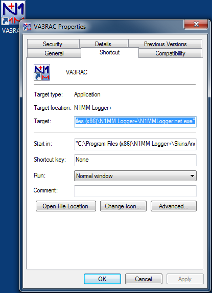
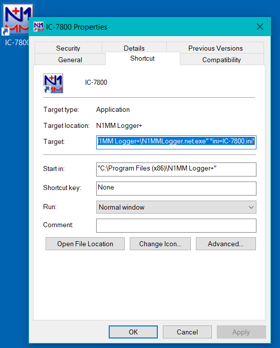
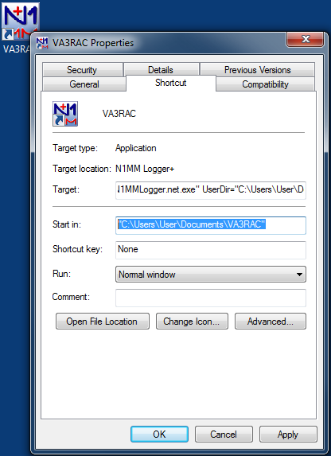

<!DOCTYPE html>
<html lang="pt-BR">
<head>
<script type="text/javascript">
    (function(c,l,a,r,i,t,y){
        c[a]=c[a]||function(){(c[a].q=c[a].q||[]).push(arguments)};
        t=l.createElement(r);t.async=1;t.src="https://www.clarity.ms/tag/"+i;
        y=l.getElementsByTagName(r)[0];y.parentNode.insertBefore(t,y);
    })(window, document, "clarity", "script", "yn210flvy6");
<!-- Google tag (gtag.js) -->
<script>
  window.dataLayer = window.dataLayer || [];
  function gtag(){dataLayer.push(arguments);}
  gtag('js', new Date());

  gtag('config', 'G-T9KJ7E1B84');
<meta charset="UTF-8">
<meta name="viewport" content="width=device-width, initial-scale=1.0">
<title>Software Setup (Configuração do Software) — Manual N1MM+ em Português</title>
<meta name="description" content="Tradução não-oficial, feita pela comunidade brasileira de radioamadorismo, da seção Software Setup do manual oficial do N1MM Logger+.">
<meta property="og:title" content="Software Setup (Configuração do Software) — Manual N1MM+ em Português">
<meta property="og:description" content="Tradução não-oficial, feita pela comunidade brasileira de radioamadorismo, da seção Software Setup do manual oficial do N1MM Logger+.">
<meta property="og:image" content="https://n1mm.gg52floripadx.com/assets/img/og-image.png">
<meta property="og:url" content="https://n1mm.gg52floripadx.com/setup/software-setup/index.html">
<meta property="og:type" content="website">
<meta property="og:site_name" content="Manual N1MM+ em Português">
<meta name="twitter:card" content="summary_large_image">
<meta name="twitter:title" content="Software Setup (Configuração do Software) — Manual N1MM+ em Português">
<meta name="twitter:description" content="Tradução não-oficial, feita pela comunidade brasileira de radioamadorismo, da seção Software Setup do manual oficial do N1MM Logger+.">
<meta name="twitter:image" content="https://n1mm.gg52floripadx.com/assets/img/og-image.png">
<link rel="stylesheet" href="../../assets/css/style.css">
<link rel="icon" href="../../assets/favicon-32.jpg" sizes="32x32">
<link rel="icon" href="../../assets/favicon.jpg" sizes="192x192">
<link rel="apple-touch-icon" href="../../assets/favicon.jpg">
</head>
<body>

<div class="topo">
  <div class="marca">
    <a href="https://n1mm.gg52floripadx.com/">Manual N1MM+ em Português</a>
    <a href="../index.html">&larr; Voltar para Setup</a>
  </div>
</div>

<div class="aviso-traducao">
  <div class="conteudo">
    📖 <strong>Tradução não-oficial</strong>, mantida pela comunidade brasileira de radioamadorismo.
    Termos de interface do programa (nomes de menus, campos e diálogos) foram mantidos em inglês,
    pois o N1MM Logger+ não tem tradução nativa da interface para português.
    Página original em inglês: <a href="https://n1mmwp.hamdocs.com/setup/software-setup/" target="_blank" rel="noopener">n1mmwp.hamdocs.com/setup/software-setup</a>.
    Direitos autorais do conteúdo original: N1MM Logger+ Team.
  </div>
</div>

<main>
  <nav class="trilha">
    <a href="https://n1mm.gg52floripadx.com/">Início</a> &raquo;
    <a href="../index.html">Setup</a> &raquo;
    Software Setup
</nav>

  <h1>Software Setup <span class="tag-en">EN: Software Setup</span></h1>

  <div class="sumario">
    <strong>Nesta página</strong>
    <ul>
      <li><a href="#Initial_Installation">Instalação Inicial (Initial Installation)</a>
        <ul>
          <li><a href="#Multiple_Call_Signs">Múltiplos Indicativos (Multiple Call Signs)</a></li>
          <li><a href="#Multiple_ini_Files">Múltiplos Arquivos ini (Multiple INI Files)</a></li>
          <li><a href="#Multiple_Users_on_a_Single_Computer">Múltiplos Usuários em um Único Computador</a></li>
        </ul>
      </li>
    </ul>
  </div>

  <h2 id="Initial_Installation">Instalação Inicial (Initial Installation)</h2>

  <p>O download e a instalação do programa são descritos em detalhes na seção Getting Started (Primeiros Passos) deste manual, em Downloading the Software (Baixando o Software) e Installing the Software (Instalando o Software). O objetivo desta seção do manual é documentar métodos avançados para configurar o programa com múltiplas configurações independentes. Usuários de instalações básicas, que usam apenas um indicativo e não precisam de mais de uma configuração, não precisarão dos métodos descritos nesta seção e devem consultar a seção Getting Started.</p>

  <div class="caixa-alerta">
    <strong>Não tente instalar múltiplas cópias do programa</strong>
    <p>Nunca deve haver mais de uma cópia do programa instalada em um mesmo sistema operacional. O programa e seu instalador usam entradas do Registro do Windows que permitem apenas uma cópia do programa. Existem mecanismos para dar suporte a múltiplos indicativos, múltiplas configurações de hardware e até múltiplas contas de usuário do Windows a partir de uma única instalação do programa. Veja as seções abaixo para mais informações.</p>
  </div>

  <h3>Comentários sobre a Transição a partir do N1MM Logger Classic</h3>

  <p>A estrutura de arquivos foi alterada no N1MM+ em comparação com o N1MM Logger Classic. O programa em si agora é instalado em <strong>C:\Program Files</strong> em sistemas Windows de 32 bits, ou <strong>C:\Program Files (x86)</strong> em sistemas de 64 bits, mas nenhum dos arquivos que ele grava fica armazenado ali. Todos os arquivos do usuário (bancos de dados, arquivos ini, logs de erro, arquivos mc, arquivos wav, arquivos ADIF, arquivos Cabrillo, arquivos UDC, arquivos de histórico de indicativos etc.) ficam em subpastas dedicadas dentro de uma área de arquivos de usuário do Logger+, que por padrão é instalada dentro da sua pasta pessoal <strong>Documents</strong>. O instalador permite alterar qualquer um desses dois locais, mas recomenda-se não fazer isso; apenas aceite os padrões (exceção: se sua pasta Documents é automaticamente sincronizada por backup via OneDrive ou sistema semelhante, pode ser necessário instalar a área de arquivos de usuário em outro local fora do alcance desse sistema de backup, para evitar corrupção dos arquivos de banco de dados).</p>

  <p>Os arquivos dos mecanismos digitais (MMTTY, 2Tone, Fldigi) não foram reescritos e ainda precisam ficar fora dos caminhos <strong>C:\Program Files</strong> e <strong>C:\Program Files (x86)</strong> no Windows Vista, 7, 8, 10 e 11, assim como acontecia no Logger Classic. Uma solução é deixá-los onde estavam no Logger Classic (por exemplo, em <strong>C:\Hamradio\MMTTY</strong> ou <strong>C:\MMTTY</strong> ou...); outra solução é criar uma nova pasta dentro da sua pasta de arquivos de usuário do N1MM Logger+ para os mecanismos digitais. Qualquer uma das duas formas funciona.</p>

  <p>Seus arquivos de mensagens já existentes do N1MM Logger Classic vão funcionar. Uma exceção parcial são os arquivos de mensagens de SSB, cujo local padrão dos arquivos wav mudou; você pode manter os arquivos mc antigos e colocar seus arquivos wav um nível mais fundo dentro da pasta wav (ou seja, criar uma subpasta wav dentro da pasta wav criada durante a instalação, e colocar eventuais pastas específicas de operador dentro dessa subpasta de segundo nível), ou pode remover o prefixo <strong>wav\</strong> dos nomes de arquivo no mc antigo. Qualquer uma das duas formas funciona.</p>

  <p>Os arquivos de histórico de indicativos (call history) e os arquivos UDC (User Defined Contest) também devem ser transferidos sem problemas. Porém, o(s) arquivo(s) ini do Logger <strong>não</strong> serão transferidos (você terá que refazer sua configuração de hardware), e recomendamos usar a lista de clusters Telnet fornecida com o N1MM+. Ela foi recentemente ampliada e revalidada.</p>

  <h3 id="Multiple_Call_Signs">Múltiplos Indicativos (Multiple Call Signs)</h3>

  <p>Se você usa o Logger com mais de um indicativo, deve configurar um banco de dados separado para cada indicativo. Isso inclui indicativos com prefixo ou sufixo modificador (como W1ABC/3, ou ZL/G4ABC), assim como indicativos de clube, indicativos de operadores convidados que usam seu próprio indicativo durante um contest, ou o indicativo de uma estação multi-operador onde seu computador é utilizado. Em cada banco de dados, certifique-se de que o indicativo no campo <strong>Call</strong>, na janela Station Information dialog (acessível pelo menu <strong>Config &gt; Change your Station Data...</strong>), seja o indicativo realmente usado enquanto aquele banco de dados estiver aberto. O indicativo dessa janela é o que é enviado pelas macros <strong>{MYCALL}</strong> e <strong>*</strong>, e também é o indicativo transmitido que aparece em cada linha QSO: do arquivo Cabrillo. Para fins de conferência de log (log-checking), esse precisa ser o indicativo transmitido ao ar, não o indicativo do operador (para alterar o indicativo do operador no log, use o comando <strong>OPON</strong> ou <strong>Ctrl+O</strong>; para alterá-lo no arquivo Cabrillo, mude o conteúdo do campo <strong>Operators</strong> na janela Contest Setup daquele contest).</p>

  <p>Se você usa mais de um banco de dados com o mesmo indicativo, observe que, ao criar um novo banco de dados (pelo menu <strong>File &gt; New Database...</strong>), as informações da estação são copiadas do banco de dados que estava aberto no momento da criação. Portanto, se você quiser criar múltiplos bancos de dados com um dos seus indicativos alternativos, pode primeiro trocar para um banco de dados existente que já use aquele indicativo antes de criar o novo, evitando ter que reinserir as informações da estação no novo banco.</p>

  <p>Se a única coisa que muda entre os bancos de dados é o indicativo e as informações relacionadas na janela Station Information, usar bancos de dados separados é tudo o que você precisa fazer. Se você também muda a configuração de hardware para indicativos diferentes, talvez queira usar o recurso <strong>Multiple ini Files</strong> (Múltiplos Arquivos ini), descrito na próxima seção.</p>

  <div class="caixa-info">
    <strong>O uso de indicativos no ADIF, no Cabrillo e no N1MM Logger+</strong>
    <p>Existem até três formas diferentes de uso de indicativos: como identificação da estação no ar, como identificação do operador e como identificação do dono da estação. As duas primeiras são usadas pelo N1MM Logger+ e aparecem em lugares diferentes do arquivo Cabrillo. A terceira normalmente não aparece nos arquivos Cabrillo, embora haja uma forma de incluí-la na linha OPERATORS: do cabeçalho. As três podem aparecer em arquivos ADIF, mas o Logger só exporta as duas primeiras para o ADIF.</p>
    <p>O mais importante é o indicativo da estação (station call sign), ou seja, o indicativo com que a estação se identifica no ar. Esse é o campo <strong>STATION_CALLSIGN</strong> no ADIF. É o indicativo que aparece como indicativo transmitido em cada linha QSO: do arquivo Cabrillo, assim como na linha CALLSIGN: do cabeçalho do Cabrillo. No N1MM Logger+, é o indicativo inserido no campo superior (Call) da janela Station Information (<strong>Config &gt; Change Your Station Data...</strong>). É o indicativo enviado quando você usa a macro <strong>{MYCALL}</strong> ou <strong>*</strong> nas mensagens de teclas de função. Ele é armazenado em apenas um lugar no banco de dados, pois deve ser o mesmo para todos os QSOs daquele banco. Não muda entre contests dentro do mesmo banco de dados.</p>
    <p>Se você usa mais de um indicativo de estação (por exemplo, o seu próprio e um indicativo de clube ou secundário), deve usar bancos de dados separados, um para cada indicativo de estação usado no ar como identificação. Você pode criar novos bancos de dados pelo menu <strong>File &gt; New Database...</strong>, e configurar o indicativo da estação e demais dados relacionados na janela Station Information no momento em que cria cada banco de dados.</p>
    <p>Vale notar que o nome do arquivo do banco de dados não tem importância. O nome do arquivo é apenas o nome que o Windows usa para localizar o arquivo. Ele não afeta o conteúdo do arquivo, nem os arquivos Cabrillo e ADIF exportados. O nome do arquivo não precisa ser um indicativo. Você pode usar um indicativo como nome do arquivo se quiser, para facilitar lembrar para que serve aquele banco de dados, mas isso é totalmente opcional.</p>
    <p>O campo <strong>OPERATOR</strong> nos arquivos ADIF é o indicativo do operador que operou a estação durante aquele QSO. É usado principalmente em operações multi-operador (multi-op), mas também pode ser usado quando um operador único usa um indicativo de clube ou secundário. No N1MM Logger+, ele é armazenado separadamente em cada QSO do banco de dados, permitindo a troca de operadores em multi-ops. Pode ser alterado com o comando <strong>OPON</strong>, com <strong>Ctrl+O</strong>, ou pelo menu <strong>Config &gt; Change Operator Callsign Stored in Log</strong>.</p>
    <p>Se você nunca alterar o indicativo do operador no Logger, ele será igual ao indicativo da estação, e você não precisa se preocupar com isso. Porém, se em algum momento você usar um desses métodos para alterar o indicativo do operador, ele será lembrado a partir daí para os QSOs seguintes, mesmo de um contest para outro. Se você usa um indicativo de estação em uma operação multi-op e faz os operadores digitarem seus indicativos individuais a cada troca, então, no próximo contest usando o mesmo banco de dados, o campo Operator em todos os seus QSOs continuará sendo o indicativo da última pessoa que operou durante o multi-op, a menos que você o altere ao final do multi-op ou no início do novo contest.</p>
    <p>O campo do operador no log não é exportado para o Cabrillo, exceto possivelmente na linha OPERATORS: do cabeçalho. Depois de um contest, se quiser, você pode usar o botão <strong>Update Ops from Log</strong> na janela Contest Setup para reunir todos os indicativos de operadores armazenados nos QSOs daquele log e colocá-los no campo <strong>Operators</strong>, ou pode simplesmente digitá-los ali manualmente.</p>
    <p>O terceiro indicativo que aparece em alguns arquivos ADIF é o indicativo do dono da estação (<strong>OWNER_CALLSIGN</strong>). Ele é usado raramente, seja por um operador convidado em outra estação que usa seu próprio indicativo como indicativo da estação e quer identificar a estação anfitriã, seja em uma estação de clube, ou em situações em que um indicativo de clube é usado como indicativo da estação e a operação ocorre na estação de um dos membros. O N1MM Logger+ não exporta esse campo para o ADIF, mas alguns programas de log genéricos exportam. O indicativo do dono pode ser incluído em um arquivo Cabrillo na linha OPERATORS: do cabeçalho, colocando o caractere @ na frente do indicativo do dono, como um dos operadores.</p>
    <p>Por exemplo, se VE3KI fosse operar usando o indicativo de clube VA3RAC a partir da estação de VE3FU, ele usaria um banco de dados com VA3RAC como indicativo da estação. Antes do contest, ele usaria Ctrl+O para inserir VE3KI como indicativo do operador. Ele digitaria <strong>VE3KI @VE3FU</strong> no campo Operators da janela Contest Setup, para que essa informação fosse exportada na linha OPERATORS: do arquivo Cabrillo. O cabeçalho do Cabrillo conteria a linha CALLSIGN: VA3RAC, e cada linha QSO: do arquivo Cabrillo teria VA3RAC como indicativo transmitido. O arquivo ADIF exportado pelo Logger conteria os campos &lt;STATION_CALLSIGN:6&gt;VA3RAC e &lt;OPERATOR:5&gt;VE3KI em cada registro de QSO, mas o indicativo do dono (VE3FU) não apareceria no arquivo ADIF exportado.</p>
  </div>

  <h3 id="Multiple_ini_Files">Múltiplos Arquivos ini (Multiple INI Files)</h3>

  <p>Quem já usou o N1MM Logger Classic talvez conheça o recurso de iniciar o programa com arquivos .ini alternativos, por exemplo para configurações diferentes com rádios diferentes, modos diferentes etc. Um recurso semelhante existe no Logger+. Você pode usar arquivos .ini alternativos para layouts de tela e skins diferentes, hardware diferente, ou até como método alternativo para abrir bancos de dados diferentes, em vez de usar o menu <strong>File &gt; Open database...</strong>.</p>

  <p>As instruções a seguir presumem que você fez uma instalação padrão, com os arquivos do programa em <strong>C:\Program Files (x86)\N1MM Logger+\</strong>, e os arquivos modificáveis (do usuário) em <strong>Documents\N1MM Logger+\</strong>. A seguir, um passo a passo para criar dois novos atalhos chamados Radio1 e Radio2 (você pode, claro, usar outros nomes), usando novos arquivos ini chamados Radio1.ini e Radio2.ini. Se você quiser apenas um atalho novo, ou três, o processo é o mesmo, com as adaptações óbvias para a quantidade desejada.</p>

  <p>Primeiro, no Explorador de Arquivos (File Explorer), navegue até a pasta <strong>C:\Program Files (x86)\</strong>. Se o seu sistema for de 32 bits e não existir a pasta <strong>C:\Program Files (x86)\</strong>, vá até <strong>C:\Program Files\</strong> no lugar. De qualquer forma, dentro dessa pasta, localize a subpasta <strong>N1MM Logger+</strong> e abra-a. Encontre o arquivo chamado <strong>N1MM Logger.net.exe</strong>, clique com o botão direito nele e selecione "Create shortcut" (Criar atalho) no menu que aparece. Em versões do Windows posteriores ao XP, uma pequena janela vai abrir dizendo algo como "Windows can't create a shortcut here. Do you want the shortcut to be placed on the desktop instead?" (O Windows não pode criar um atalho aqui. Deseja colocar o atalho na área de trabalho?). Clique em Yes (Sim) — a área de trabalho é onde você quer o atalho mesmo. Isso vai criar um novo atalho na sua área de trabalho chamado <strong>N1MMLogger.net.exe – Shortcut</strong>. Clique com o botão direito nesse atalho e selecione "Rename" (Renomear) no menu. Altere o nome para Radio1 (ou o nome que preferir para esse atalho).</p>

  <p>Para um segundo atalho na área de trabalho, repita todo o processo do parágrafo anterior, exceto que, ao renomear o segundo atalho, chame-o de Radio2 (ou o nome que preferir, desde que não seja igual ao primeiro ou a qualquer outro atalho na sua área de trabalho).</p>

  <p>Em seguida, no Explorador de Arquivos, navegue até a pasta <strong>Documents\N1MM Logger+\</strong>, onde ficam seus arquivos de usuário (<strong>Nota:</strong> se houver mais de uma pasta N1MM Logger+ no seu sistema, ou se a área de arquivos de usuário já tiver sido movida, a que você quer é a indicada pelo menu <strong>Help &gt; Open Explorer on User Files Directory</strong>). Encontre o arquivo chamado <strong>N1MM Logger.ini</strong>, clique com o botão direito nele e selecione "Copy" (Copiar) no menu. Clique com o botão direito em outro ponto da janela do Explorador de Arquivos (na área onde os arquivos e pastas são exibidos) e selecione "Paste" (Colar) no menu. Isso deve criar um novo arquivo chamado <strong>N1MM Logger – Copy.ini</strong> (ou talvez <strong>N1MM Logger – Copy (1).ini</strong>, se já existir outro arquivo com o primeiro nome). Clique com o botão direito nesse arquivo e selecione "Rename" (Renomear) no menu. Altere o nome para Radio1.ini (ou o nome que preferir).</p>

  <p>Novamente, para um segundo atalho, repita todo o processo do parágrafo anterior, nomeando o segundo arquivo novo como Radio2.ini (ou o nome que preferir).</p>

  <p>Agora, de volta à área de trabalho, clique com o botão direito no atalho Radio1 e selecione "Properties" (Propriedades) no menu. Deve abrir uma janela com o painel de propriedades do atalho, e o nome do programa no campo Target: (Destino) destacado em azul. Deve se parecer com isto:</p>

  

  <p>Nesse campo Target, posicione o cursor do mouse logo à direita das últimas aspas (") mas ainda dentro da caixa de texto, e clique com o botão esquerdo. Isso deve desativar o destaque azul e deixar o cursor logo à direita das aspas (você pode usar a seta para a direita do teclado para posicionar o cursor ali, caso não tenha acertado de primeira). Digite um espaço, e então <strong>Ini=Radio1.ini</strong>. Se o nome escolhido para o arquivo ini tiver um espaço, coloque entre aspas apenas o nome do arquivo ou o argumento inteiro, por exemplo <strong>Ini="Radio 1.ini"</strong> ou <strong>"Ini=Radio 1.ini"</strong>. Não deixe espaços imediatamente antes ou depois do sinal de =. Clique em OK. A captura de tela abaixo mostra um exemplo em que o atalho na área de trabalho se chama IC-7800 e o arquivo ini se chama IC-7800.ini.</p>

  

  <p>Mais uma vez, para um segundo atalho, repita o processo do parágrafo anterior com o atalho Radio2, mas agora o argumento deve ser <strong>Ini=Radio2.ini</strong> (ou o nome que você escolheu).</p>

  <p>Ao iniciar o programa pelo atalho Radio1 pela primeira vez, a configuração será a mesma de antes, mas agora você pode fazer alterações (rádio diferente, portas COM diferentes etc.) que só vão se aplicar ao atalho Radio1. O mesmo vale para o Radio2. Note que, embora as configurações possam ser diferentes, ambas ainda podem apontar para o mesmo banco de dados ou para bancos diferentes — a escolha é sua. Você pode trocar de banco de dados pelo menu <strong>File &gt; Open Database...</strong>, mas isso só altera o banco de dados lembrado para o atalho e arquivo ini atuais, não para o(s) outro(s). Se ambas as configurações apontarem para o mesmo banco de dados, qualquer novo contest ou QSO adicionado ao banco a partir de um atalho também estará disponível no outro, já que usam o mesmo banco. Quando você inicia o programa pela primeira vez a partir de um atalho, o log de contest usado por último naquele atalho será o que é aberto, independentemente de outros logs de contest no mesmo banco de dados terem sido criados e/ou abertos a partir de outro atalho.</p>

  <h3 id="Multiple_Users_on_a_Single_Computer">Múltiplos Usuários em um Único Computador</h3>

  <p>O N1MM Logger+ armazena o indicativo da estação e alguns dados relacionados no mesmo arquivo de banco de dados onde ficam os QSOs. Se você está satisfeito com a configuração geral, mas quer usar múltiplos indicativos de estação (por exemplo, um indicativo de clube ou de evento especial, além do seu próprio), basta criar um banco de dados diferente para cada indicativo, e provavelmente você pode pular o restante desta seção.</p>

  <p>Por outro lado, se você quiser ambientes de arquivos de usuário completamente diferentes para configurações diferentes, pode ser interessante montar áreas de arquivos de usuário separadas para cada configuração. Ou, se você instala o N1MM Logger+ em um computador usado por pessoas diferentes e quer proteger os arquivos de cada usuário dos demais, pode valer a pena aprender a configurar o N1MM Logger+ para múltiplas configurações diferentes no mesmo computador, sob contas de usuário diferentes.</p>

  <p>Primeiro, você precisa decidir se vai restringir as diferenças entre uma configuração e outra apenas ao que é controlado pelo arquivo <strong>N1MM Logger.ini</strong> (resumindo: itens de configuração de hardware definidos no Configurer, layouts de janelas, e a escolha inicial de qual banco de dados e log de contest o programa abre ao iniciar), ou se você quer diferenças mais abrangentes entre as configurações. Para a maioria dos usuários, a primeira opção, que já existia no N1MM Logger Classic, é suficiente. Esse recurso é descrito na seção anterior, sobre <strong>Multiple ini files</strong> (Múltiplos Arquivos ini).</p>

  <p>Nas configurações mais complexas, você pode querer configurar o programa para usuários diferentes que usarão contas de usuário diferentes do Windows, ou para ambientes de arquivos de usuário diferentes para configurações de programa e hardware diferentes. Se apenas uma conta de usuário do Windows for usada, seja por múltiplos usuários ou por um único usuário com configurações de programa diferentes, você pode criar múltiplas pastas de arquivos de usuário do N1MM Logger+ dentro da mesma pasta pai. Se múltiplas contas de usuário do Windows estiverem envolvidas, cada usuário pode ter sua própria área independente de arquivos do Logger+, guardada na sua pasta Documents pessoal ou em outro local ao qual sua conta tenha acesso. Nesse cenário, cada área de arquivos do Logger+ ficará acessível apenas para aquele usuário específico. Em qualquer um dos casos, mudanças feitas em uma área de arquivos do Logger+ <strong>não</strong> serão refletidas nas demais áreas. Isso inclui desde alterações de configuração de hardware até o registro de QSOs individuais. Se você quiser usar múltiplas contas de usuário do Windows mas permitir que todos os usuários compartilhem uma única área de arquivos do Logger+, por exemplo para registrar QSOs em um único log de contest compartilhado, também existe uma forma de fazer isso usando o argumento de linha de comando <strong>UserDir=</strong>, descrito abaixo, para fazer os atalhos de área de trabalho de cada usuário apontarem para a mesma área de arquivos compartilhada. Note que, se houver mais de uma área de arquivos de usuário no seu sistema, a que o programa está usando no momento sempre será a indicada pelo menu <strong>Help &gt; Open Explorer on User Files Directory</strong>.</p>

  <p>Independentemente de quantas contas de usuário você use para rodar o programa, o programa em si é instalado apenas uma vez. A instalação é uma instalação normal. Tanto a instalação inicial quanto as atualizações seguintes devem ser feitas a partir de uma conta de usuário com privilégios administrativos naquele computador.</p>

  <p>Os arquivos do programa serão instalados na área de arquivos do programa (normalmente <strong>C:\Program Files\N1MM Logger+</strong> em um sistema de 32 bits, ou <strong>C:\Program Files(x86)\N1MM Logger+</strong> em um sistema de 64 bits). A área de arquivos de usuário do Logger normalmente será a área que você quer usar com a primeira configuração ou configuração principal, e por padrão ela fica na sua pasta <strong>Documents</strong>. No Windows 7 ou 8, seria <strong>C:\Users\[usuário]\Documents\N1MM Logger+</strong>, onde [usuário] é o nome com que você faz login no Windows. No Windows XP SP3, o local correspondente seria <strong>C:\Documents and Settings\[usuário]\My Documents\N1MM Logger+</strong>. Em computadores onde o OneDrive está, esteve, ou pode vir a estar ativo, a instalação original da área de arquivos de usuário pode ter sido feita em outro local, como <strong>C:\HamRadio\N1MM Logger+</strong>.</p>

  <p>Agora, para a segunda configuração, crie uma nova pasta em um local ao qual o usuário dessa segunda configuração tenha acesso. Se esse usuário for você mesmo, basta criar outra pasta dentro da sua pasta Documents e dar a ela um nome que reflita a nova configuração. Se for outra pessoa, usando uma conta de usuário diferente para fazer login no Windows no seu computador, pode ser uma nova pasta na pasta Documents pessoal daquele usuário, chamada N1MM Logger+ (para ser aberta pelo ícone padrão da área de trabalho ou do Menu Iniciar) ou com outro nome, para uso com um ícone de área de trabalho personalizado.</p>

  <p>Agora você precisa de uma forma de dizer ao N1MM Logger+ qual área de arquivos de usuário usar. O ícone original do N1MM Logger+ criado durante a instalação do programa vai iniciar o programa usando a configuração e os arquivos de banco de dados da área de arquivos de usuário original, quando executado a partir da conta usada para instalar o Logger, ou a partir do local padrão presumido na pasta Documents local, quando executado a partir de outra conta. Se você quiser usar uma área de arquivos personalizada, precisa de uma forma de dizer ao programa para usar a nova área de arquivos de usuário que você acabou de criar, em vez da padrão.</p>

  <p>Estando logado na conta do Windows a partir da qual o programa será usado, use o Explorador de Arquivos do Windows para localizar o arquivo <strong>N1MMLogger.net.exe</strong> na pasta do programa N1MM Logger+, clique com o botão direito no arquivo e selecione "Copy" (Copiar), depois clique com o botão direito em uma área vazia da área de trabalho e selecione "Paste Shortcut" (Colar Atalho). Isso deve criar um novo atalho na área de trabalho desse usuário.</p>

  <p>Renomeie o novo atalho para diferenciá-lo do atalho original. Para isso, clique com o botão direito no novo atalho, selecione Rename (Renomear) e digite o novo nome, refletindo a nova configuração com a qual ele será usado, no espaço logo abaixo do ícone.</p>

  <p>Agora clique com o botão direito no ícone mais uma vez e selecione Properties (Propriedades) no menu. Deve aparecer uma janela parecida com esta:</p>

  

  <p>Clique com o mouse à direita do nome do programa destacado no campo de texto Target, digite um espaço, depois a palavra-chave <strong>UserDir=</strong> e o caminho completo até a nova pasta entre aspas, por exemplo <strong>UserDir="C:\Users\[usuário]\Documents\[nome da nova pasta]"</strong> ou <strong>"UserDir=C:\Users\[usuário]\Documents\[nome da nova pasta]"</strong> (Windows 7 ou 8 — no Windows XP SP3, seria <strong>"UserDir=C:\Documents and Settings\[usuário]\My Documents\[nome da nova pasta]"</strong>). Não pode haver espaços entre UserDir e o sinal de =, nem entre o = e o nome da pasta. Na captura de tela abaixo, foi copiado esse mesmo caminho (sem a palavra-chave UserDir=) no campo de texto "Start in" (Iniciar em); o campo Target não é largo o suficiente para mostrar todo o seu conteúdo:</p>

  

  <p>Clique em OK para sair da janela Properties. O novo atalho agora vai iniciar o programa usando os arquivos de usuário da nova pasta, em vez da área de arquivos de usuário original do N1MM Logger+. Na primeira execução, se a nova área de arquivos estiver vazia, o programa vai criar um novo conjunto de arquivos de usuário do zero, assim como fez na instalação original. Abra o programa pelo novo atalho, insira quaisquer alterações de indicativo e dados relacionados na janela Station Information (<strong>Config &gt; Change Your Station Data</strong>), use o menu <strong>File &gt; New Database</strong> para criar um novo banco de dados na nova pasta Databases, destinado a guardar logs de contest com a nova configuração, e prossiga para o Configurer para fazer a configuração de hardware. Você pode copiar outros arquivos de usuário (arquivos de mensagens de teclas de função, arquivos de histórico de indicativos etc.) da área de arquivos de usuário original para os locais correspondentes na nova área, economizando tempo na configuração.</p>

  <p>A partir daqui, você pode usar o ícone original do N1MM Logger+ para abrir o programa com a primeira configuração, e o novo ícone da área de trabalho para abri-lo com a segunda configuração. Na prática, agora você tem duas cópias virtuais do programa. Você pode executar qualquer uma das cópias virtuais, mas apenas uma de cada vez — não é possível ter duas cópias rodando simultaneamente no mesmo computador.</p>

  <p>Você pode configurar cada uma dessas cópias virtuais do programa de forma independente; novos logs de contest criados em uma cópia não ficarão visíveis na outra, e alterações de configuração, bancos de dados, posição e layout de janelas, skins etc. feitas em uma cópia não terão efeito na outra. Por isso, se você adicionar um hardware novo que exija alterações no Configurer, terá que fazer essas alterações nos dois lugares. Se quiser compartilhar dados de usuário, como arquivos de mensagens de teclas de função ou arquivos de histórico de indicativos, pode fazer as alterações em um lugar e copiar os arquivos alterados para os locais correspondentes na outra área de arquivos de usuário.</p>

</main>

<footer class="rodape">
  <div class="conteudo">
    Conteúdo original: <a href="https://n1mmwp.hamdocs.com/setup/software-setup/" target="_blank" rel="noopener">N1MM Logger+ Documentation</a>,
    Copyright &copy; N1MM Logger+ Team. Tradução para PT-BR: comunidade brasileira de radioamadorismo.
    Esta é uma tradução não-oficial, sem vínculo com os autores originais.<br>
    Projeto do <a href="https://gg52floripadx.com/" target="_blank" rel="noopener">GG52 Floripa DX</a> — iniciativa de <a href="https://pp5kj.com" target="_blank" rel="noopener">PP5KJ</a>.
  </div>
</footer>

</body>
</html>
